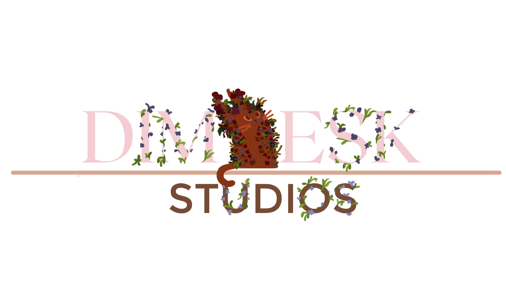

Hi, I'm M, the heart and soul behind this one-person indie studio. Games and art have been my passions for as long as I can remember, and they've shaped not just my creative journey but also the vision for this studio. My dream is to craft meaningful experiences through games that blend creativity, storytelling, and artistry. It's a challenging road, but I'm committed to pouring my heart into every project, no matter how small or ambitious. Your support means more than words can express. By joining me on this journey, you'll be helping bring these dreams to life—and as a thank-you, you'll earn a special spot in the credits, early access to merch, game releases and some exclusive goodies along the way. Thank you for believing in indie creators like me. Together, we can build something unforgettable. —M